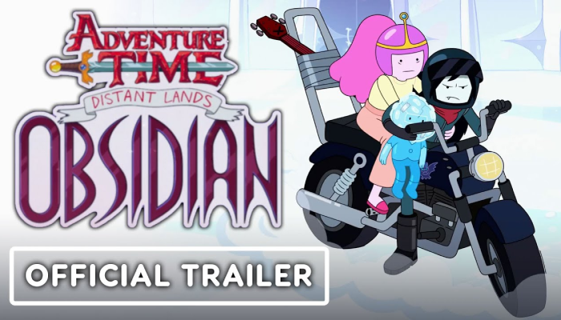
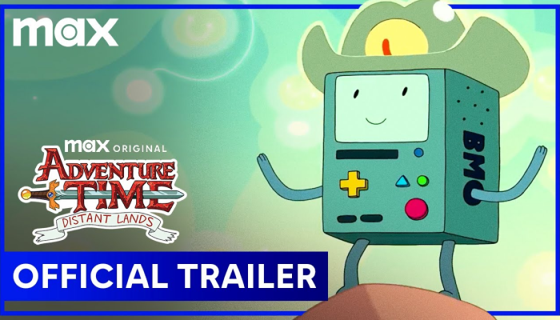

trailer
official trailer
<어드벤처 타임 >은 제목처럼 친구와 함께 하는 작은 모험들과
그 안에서 피어오르는 변치 않는 우정에 대해 중점적으로 이야기를 하고
있습니다.
<어드벤처 타임 >의 다양하고 특별한 에피소드 트레일러를
확인해보세요.

- Adventure Time: Distant Lands Obsidian - Official Trailer
- Adventure Time:Obsidian에서는 강력하고 위험한 용이 유리 왕국 아래 감옥에서 풀려나자 어린 책벌레인 Glassboy는 수세기 전에 처음으로 용을 물리친 전설적인 영웅인 뱀파이어 여왕 Marceline을 찾기 위해 출발합니다. Adventure Time: Distant Lands - Obsidian은 11월 19일 목요일 HBO Max에서 첫 방송됩니다.
- Adventure Time: Fionna & Cake | Official Trailer | Max
- 사랑받는 "Adventure Time" 프랜차이즈의 캐릭터를 바탕으로 Ooo 땅을 배경으로 한 이 새로운 10부작 시리즈는 핀과 제이크의 대체 우주 버전을 따라 자기 발견을 향한 다중 우주 도약 여정을 따릅니다. 피오나와 그녀의 조수 케이크는 강력한 새로운 적의 십자선에 놓이게 되었을 때, 전 얼음왕 사이먼 페트리코프의 도움을 구할 수밖에 없습니다.

- Adventure Time: Distant Lands Trailer | 'BMO' | Rotten Tomatoes TV
- Adventure Time: Distant Lands — Niki Yang 주연의 BMO 예고편을 확인하세요! 아래 댓글을 통해 여러분의 생각을 알려주세요.